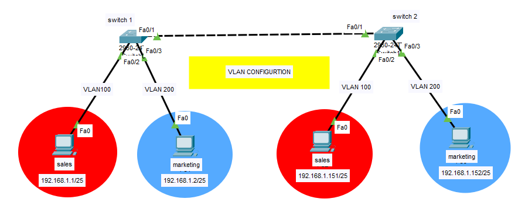

Exit
Previously we studied that two PCs belonging to different VLANS cannot communicate with each other.

But this is not true anymore. 2 devices belonging to different VLANS can also communicate with each other by "Inter VLAN Routing".
A VLAN is a broadcast domain, which means computers on separate VLANs are unable to communicate without the intervention of a routing device. Whenever hosts in one VLAN need to communicate with hosts in another VLAN, the traffic must be routed through a routing device. This process is known as inter-VLAN routing.
Now we can send packets from PC having IP add. 10.0.0.1 to PC having IP as 192.168.1.3 belonging to two different VLANS namely VLAN 10 and VLAN 20 respectively. This is possible with the help of a router or a layer 3 switch. This is called Inter VLAN Routing.
Practical Implementation
Click here to see the "Practical Implementation" of how Inter VLAN Routing works.